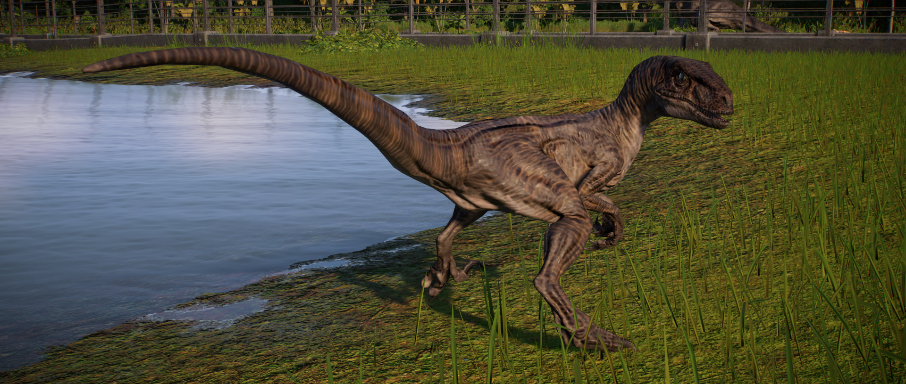

Velociraptor’s reputation as one of the most terrifying dinosaurs comes not from its size – at just 4m in length it is dwarfed by many less intimidating genera – but its ferocity and intelligence. With its large, sharp teeth and sickle-shaped claws, Velociraptor is a highly efficient predator, preying upon Tsintaosaurus and Dryosaurus among others, although its relative lack of power means it is unlikely to attack large or armoured dinosaurs.